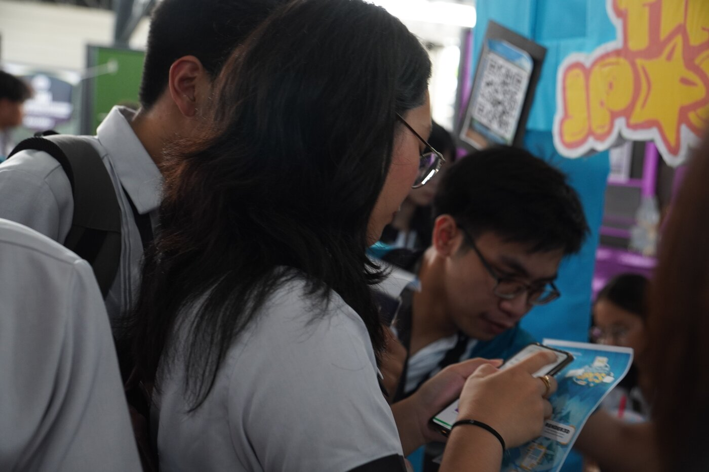
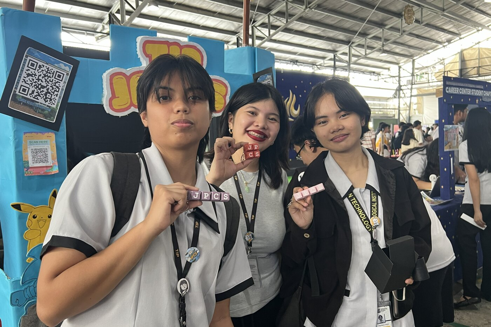
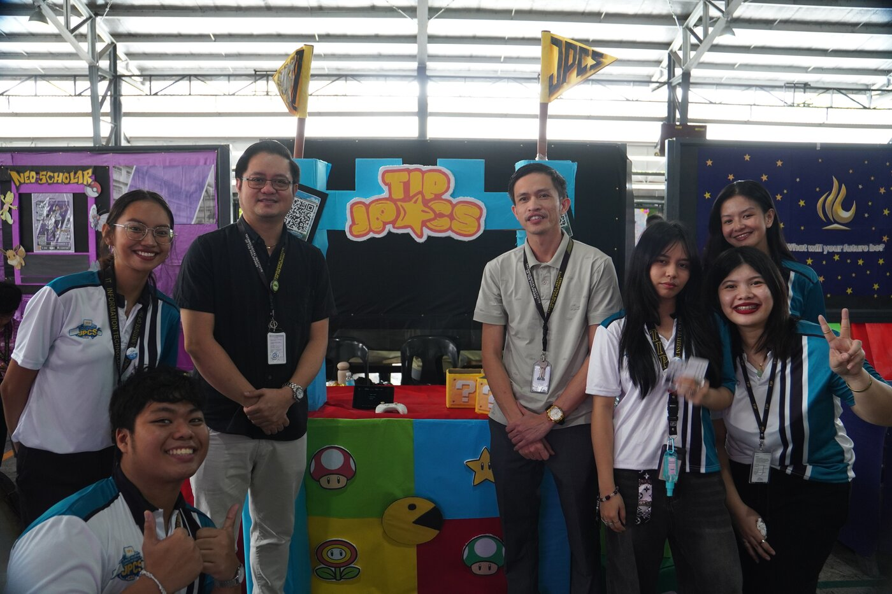
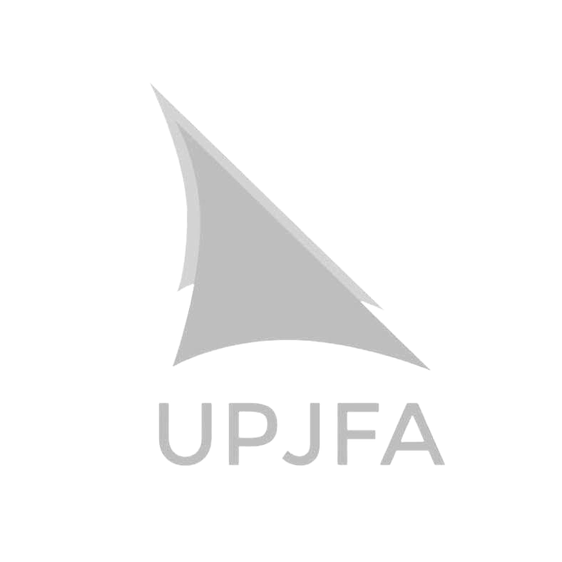

General Assembly: Spirit's Eve Festival
Tech talks from guest JPCS chapters, a "Trick-or-Tech" challenge, and officer intros.
The Junior Philippine Computer Society – T.I.P. QC Chapter is the student branch of the Philippine Computer Society, the country's longest-running professional IT association. We run the events, workshops, and competitions that turn CCS students into ICT professionals.
JPCS – T.I.P. QC Chapter creates and sustains an extracurricular learning environment that complements your academic experience, responds to what the ICT industry actually needs, and prepares you to be a better ICT professional.
We unite and commit our members to technical and leadership excellence, to fostering lasting friendships, and to constructive cooperation in genuine love of God and country. Every event we run is built around one of these.
Every year, Student Life Fair is where JPCS puts its best foot forward — and SLF 2025 was no exception. Our booth and promo video earned us two of the fair's top honors.



A quick look at the flagship events from SY 2025–2026. Full details are on the Events page.
Tech talks from guest JPCS chapters, a "Trick-or-Tech" challenge, and officer intros.

A two-batch, hands-on seminar on 3D modeling for game development and virtual reality.

Days of booths, promo videos, and RSO membership drives — one of our biggest recruitment pushes of the year.
From our national affiliation to campus-wide collaborations, here's who we build with.
Our parent organization — the longest-running professional IT association in the Philippines.
Our partner for Gen AI to Z: A Career Summit, connecting members to careers shaped by generative AI.

Our collaborator for UP Fair 2024: Quests, a joint inter-collegiate activity at UP Diliman.